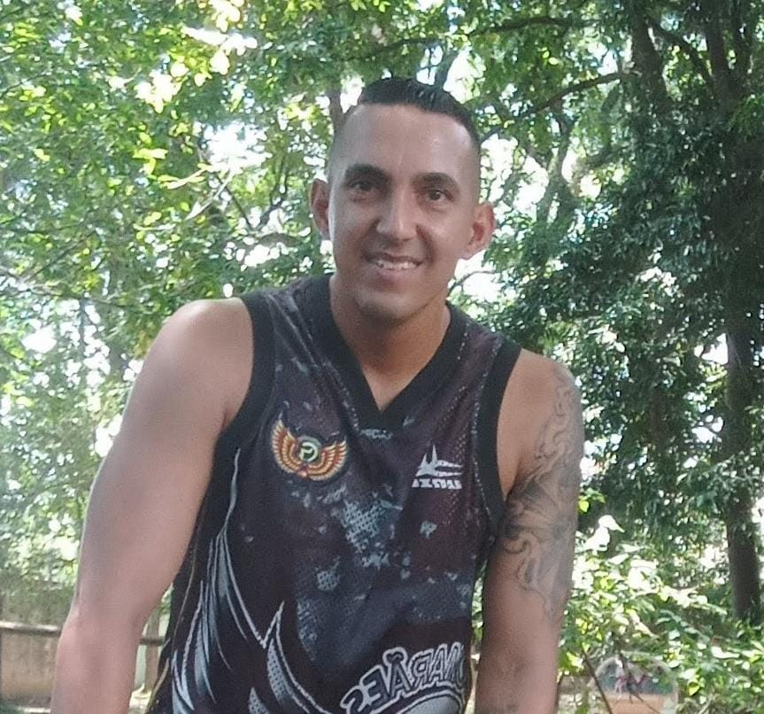
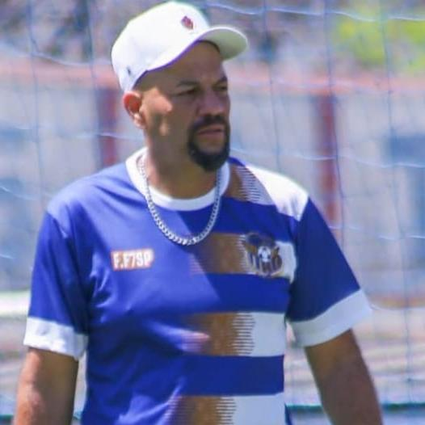

0%da meta
META DE CONSTÂNCIA
0 de 3 dias registrados
Registre três dias da sua rotina nesta semana. Pausas também contam.
 Meu Caminho Bepor BeMEsportivo
Meu Caminho Bepor BeMEsportivo
Crie seu Mapa BeM e organize uma jornada possível, sem diagnóstico ou prescrição.
Conteúdos públicos continuam disponíveis. Enquanto não houver uma forma verificável de participação do responsável e proteção adequada à idade, não criaremos perfil, diário ou recomendações personalizadas para menores.
Escolha uma opção para receber o primeiro passo. Você poderá mudar esse caminho quando quiser.
Registre seu dia para começar a enxergar sua evolução.
Registre três dias da sua rotina nesta semana. Pausas também contam.
Seu primeiro registro inicia a sequência.
Seu histórico aparecerá aqui.
0 XP · Primeiro passo
Escolha uma prioridade para hoje:
Sua escolha ajuda o sistema a mostrar apenas uma orientação por vez.
Responda três perguntas rápidas para receber sua primeira orientação.
Planeje, receba lembretes e acompanhe o que conseguiu realizar sem transformar rotina em cobrança.
Um registro simples para entender sua rotina e receber um resumo útil.
Uma foto pode ajudar a começar seu registro de alimentação, treino, atividade ou lazer.
Use apenas imagens que você pode compartilhar. Evite documentos, telas, dados pessoais e fotos de crianças ou de outras pessoas identificáveis.
Cada registro ajuda o sistema a criar resumos mais úteis. Dias de pausa também podem ser registrados.
Faça um registro rápido para visualizar atividade, alimentação, hidratação e descanso.
Os indicadores serão atualizados a cada registro.
Você ganha experiência por aprender, experimentar e registrar — nunca por exagerar no esforço.
Registre um passo, use uma ferramenta ou leia um conteúdo recomendado.
As indicações mudam conforme seu objetivo, momento, tempo disponível e preferências.
Conclua uma etapa por vez e avance no seu ritmo.
Seu perfil fica salvo somente neste navegador e pode ser alterado quando você quiser.
Escolha um tema. Você receberá orientações curtas para colocar em prática, sem precisar preencher formulários.
Orientações educativas gerais. Dor forte, falta de ar incomum, tontura, desmaio ou piora persistente exigem interrupção da atividade e avaliação profissional.
Ciência e prática caminham juntas para tornar cada jornada mais simples, segura e duradoura.
Conte seu contexto e receba caminhos educacionais para escolher o próximo passo. Você sempre poderá revisar ou corrigir as respostas.
Este nome será usado para tornar sua experiência mais pessoal neste dispositivo.
Não existe resposta certa. Escolha o que mais representa seu momento agora.
Isso nos ajuda a diferenciar um primeiro passo, uma retomada e uma evolução.
A faixa etária ajuda a tornar a orientação mais adequada ao seu contexto.
Para proteger crianças e adolescentes, esta versão não cria perfil, diário ou recomendações personalizadas para menores de 18 anos. Você ainda pode explorar os conteúdos públicos do BeMEsportivo.
Pense em um tempo realista para cada prática, mesmo nos dias mais corridos.
Como usar este mapa: considere as opções como ponto de partida para sua decisão. Elas não avaliam sua condição física nem substituem um plano criado por profissional habilitado.
Caminhos simples com conteúdos essenciais para você começar e continuar.
Calcule referências simples para compreender melhor sua rotina esportiva.
As ferramentas oferecem estimativas educativas e não substituem avaliação profissional.
Uma dúvida pode iniciar a próxima conversa.
Compartilhe o que aproxima pessoas do esporte.
Nosso manifesto resume a essência do BeMEsportivo: pessoas criam, inspiram e transformam o esporte. Ciência e conhecimento ajudam cada jornada a continuar.
Vote, envie sua pergunta e ajude a escolher as próximas conversas da comunidade.
Escolha uma opção para participar.
As dúvidas mais relevantes da comunidade viram pauta, entrevista ou artigo.
Enviar minha perguntaExplicações, análises e experiências que transformam informação em orientação útil.
5 conversas encontradas
Escolha uma atividade que você goste e pratique por poucos minutos, duas ou três vezes por semana. O primeiro objetivo não é fazer muito: é criar segurança, conhecer seu corpo e conseguir repetir.
Primeiro passo:Defina hoje o lugar, o horário e uma atividade simples para experimentar.
Evolução vem da combinação entre treino, recuperação e constância. Observe o que já funciona e aumente apenas uma variável por vez, como duração, intensidade ou dificuldade.
Próximo passo:Escolha um objetivo mensurável para as próximas quatro semanas e acompanhe seu progresso.
A melhor rotina não é a mais intensa, mas aquela que pode ser adaptada. Tenha uma versão curta do treino para semanas corridas e respeite os sinais de cansaço, dor e desmotivação.
Para continuar:Proteja os horários possíveis e valorize cada retorno, mesmo depois de uma pausa.
O jogo contra o Cascavel tirou o Timão da zona de conforto e entregou um teste importante para a sequência da temporada.
Na minha visão, o amistoso contra o Cascavel foi a melhor escolha possível para marcar a volta do Corinthians após as férias. Pode até não ter sido um grande espetáculo, mas foi exatamente o tipo de jogo que a equipe precisava.
O Timão foi tirado da zona de conforto. Encontrou um gramado em condições ruins, um calor intenso e um adversário que, em nenhum momento, encarou a partida como um simples amistoso. Pelo contrário: o Cascavel disputou cada lance com intensidade, elevando a temperatura do confronto e transformando a primeira etapa em um jogo de muita disputa, entradas fortes e discussões.
É justamente esse tipo de cenário que faz um amistoso cumprir seu verdadeiro papel. Muito mais do que buscar um futebol bonito, o Corinthians foi obrigado a competir, suportar a pressão e manter o equilíbrio emocional em um ambiente hostil.
Esse contexto pode ser extremamente importante para a sequência da temporada. Em competições sul-americanas, especialmente quando atuar na Argentina, o Corinthians encontrará ambientes muito mais intensos e pressionados. Guardadas as proporções, partidas como essa ajudam a preparar o elenco para esse tipo de desafio.
É verdade que, tecnicamente, o futebol apresentado voltou a ficar abaixo do esperado. A equipe ainda demonstra dificuldades na criação de jogadas e pouco poder ofensivo, problemas que já vinham aparecendo antes da pausa. Mas nem todo amistoso precisa ser bonito. Alguns servem para testar o caráter, a concentração e a capacidade de reação do grupo.
Por isso, apesar das limitações técnicas e do placar, considero que o amistoso foi válido. O Corinthians ganhou um teste que dificilmente teria enfrentado em um jogo preparatório tradicional. Em certos momentos da temporada, esse tipo de experiência vale mais do que uma goleada sobre um adversário que pouco oferece resistência.
Transição, organização e leitura coletiva decidirão o próximo ciclo.
O futebol brasileiro sempre produziu jogadores criativos, fortes no improviso e capazes de decidir partidas em um lance. Esse talento continua sendo uma vantagem, mas já não basta quando o adversário controla espaços, pressiona em bloco e reduz o tempo de decisão. O jogo ficou mais rápido e menos tolerante ao erro.
Hoje, uma equipe competitiva precisa saber como sair jogando, quando acelerar, onde pressionar e como se proteger após perder a bola. Esses mecanismos não tiram liberdade do atleta; pelo contrário, criam condições para que o talento apareça em zonas mais perigosas do campo.
O problema é que muitos times ainda confundem intensidade com organização. Correr mais não significa pressionar melhor. Marcar alto sem coordenação abre espaços às costas. Atacar com muitos jogadores sem cobertura transforma posse em risco. A evolução tática passa por ensinar o atleta a ler contexto, não apenas executar ordem.
Na base, isso precisa começar cedo. Crianças e adolescentes devem aprender fundamentos, mas também precisam entender largura, profundidade, apoio, cobertura e tomada de decisão. O futebol do futuro será vencido por quem formar jogadores inteligentes, não apenas habilidosos.
A mudança não depende de copiar modelos europeus. O Brasil precisa criar sua própria síntese: manter criatividade, coragem e improviso, mas acrescentar método, análise e continuidade. Quando talento encontra estrutura, o jogo cresce.
Preparação física, dados e prevenção mudaram o jogo.
Performance não é apenas correr mais. No esporte moderno, desempenho nasce da integração entre preparação física, recuperação, alimentação, sono, prevenção de lesões e equilíbrio emocional. Um atleta pode estar tecnicamente pronto e, ainda assim, render abaixo se a carga estiver mal controlada.
Os dados mudaram a rotina dos clubes e projetos esportivos. Distância percorrida, acelerações, zonas de esforço, frequência cardíaca e histórico de lesões ajudam a comissão técnica a tomar decisões mais responsáveis. A informação não substitui o olhar humano, mas evita que decisões importantes sejam tomadas apenas pela impressão do momento.
Na prática, isso significa treinar melhor, não necessariamente treinar mais. Uma semana com jogos decisivos exige ajustes diferentes de uma semana livre. Atletas jovens, principalmente, precisam de cuidado: excesso de cobrança física pode prejudicar desenvolvimento, confiança e saúde.
Também é preciso falar sobre mente. Pressão por resultado, comparação nas redes sociais e expectativa familiar afetam o atleta. Preparação esportiva séria precisa incluir conversa, orientação e ambiente de confiança. O corpo responde melhor quando a cabeça não está em alerta constante.
Performance de verdade é sustentável. O melhor projeto não é aquele que extrai tudo do atleta hoje, mas aquele que permite evolução consistente ao longo do tempo.
Como o futebol atual é decidido sem a bola.
Pressionar melhor é jogar melhor porque a recuperação da bola deixou de ser apenas uma ação defensiva. Quando uma equipe rouba a posse perto da área adversária, ela ataca um rival desorganizado, com menos tempo para recompor e mais vulnerável ao erro.
Mas pressão alta não é sair correndo atrás da bola. Ela exige gatilhos: passe para trás, domínio ruim, jogador de costas, lateral encurralado ou goleiro pressionado. Sem esses sinais, o time se desgasta, quebra linhas e oferece espaço para o adversário atacar.
A compactação é o que torna a pressão possível. As linhas precisam estar próximas para que o primeiro combate tenha cobertura. Se o atacante pressiona e o meio-campo fica distante, o rival encontra passe limpo por dentro. Se a defesa não sobe, o time vira uma sanfona e perde controle territorial.
Times bem treinados entendem quando pressionar, quando temporizar e quando baixar bloco. Essa alternância define maturidade competitiva. A equipe que só sabe atacar sofre quando perde a bola; a equipe que só sabe defender sofre quando precisa propor. O equilíbrio está na leitura.
No futebol brasileiro, melhorar a pressão passa por treino coletivo e comunicação. O atleta precisa saber sua função, mas também precisa confiar que o companheiro vai fechar o espaço seguinte. Pressão é coragem organizada.
Especialistas traduzem conhecimento técnico em orientações claras para quem quer começar, evoluir ou permanecer no esporte.
O primeiro convidado apresentará um tema da sua especialidade em um artigo exclusivo. Cada publicação terá página própria, perfil do autor e referências profissionais.
Quero participar da colunaEnvie uma pergunta, proponha um tema, conte uma experiência ou apresente um projeto que aproxima pessoas do esporte.
Especialistas podem contribuir com conteúdo e orientação geral. Uma resposta só será identificada como profissional após validação editorial.
Encontre profissionais já cadastrados no BeMEsportivo e conheça suas especialidades.
Jornalista e colunista
Futebol, opinião e histórias de quem vive o esporte
Personal Trainer
Treinamento funcional e performance · Online e presencialVer perfil e contato
Fotógrafo Esportivo
Cobertura esportiva e branding para atletas · PresencialVer perfil e contatoFaça parte do BeMEsportivo
Profissionais do esporte, saúde e áreas relacionadas podem apresentar seu trabalho.